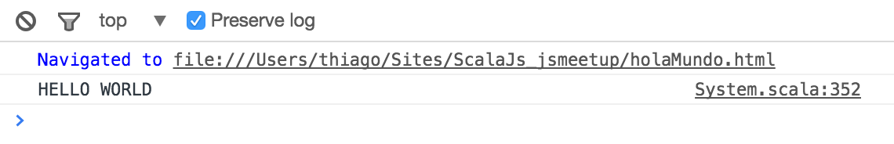
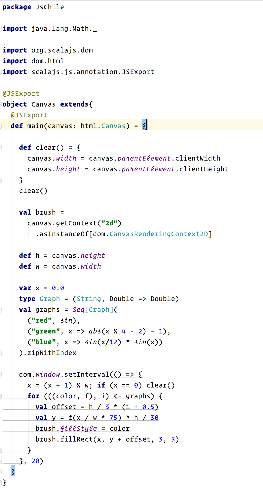

Scala(?)Js
o
YAJsC - Yet Another JS Compiler
- 1. ScalaJs
- 2. Scala(?)Js
- 3. Por que?
- 4. Ok, pero por que?
- 4-1. Type safe
- 4-2. Safe
- 4-3. Reusable
- 4-4. DRY
- 4-5. Tooling
- 5. Ejemplos
- 5-1. Duh!
- 5-2. Duh(?)!
- 5-3. Oh, buena...
1. ScalaJs
More than a compiler, an entire ecosystem
ScalaJs es un compilador (o generador?) de código JavaScript a partir de una fuente de código scala
.scala => .js
La gran diferencia entre otros generadores de código Js está en que ScalaJs trae todo el ecosistema del lenguaje a la implementación local
2. Scala(?)Js
3. Por que?
Scala es uno de los lenguajes con mejor performance a cambio de una curva de aprendizaje, digamos, divertida...
Scala corre sobre la JVM, pero a la vez es un lenguaje funcional con herramientas muy potentes (del lenguaje) y librerías con equivalente performance
Una applicación utilizando Scala con Akka es capaz de contestar hasta 50 millones de mensajes por segundo
(48 core AMD Opteron, 128 GB ECC DDR3, Ubuntu 11.10 utilizando Java 7)
(48 core AMD Opteron, 128 GB ECC DDR3, Ubuntu 11.10 utilizando Java 7)
4. Ok, pero por que?
4-1. Type safe
def alReves(recibe: String) : String = {
recibe.reverse
}
Contractos estrictos y garantia de utilización segura
4-2. Simply Safe
Evitamos que los códigos en el cliente no sean distintos (en materia de contracto) al servidor
P.Ej.:
def rompePalabra(recibe: String) : Array[String] = {
recibe.split("")
}
4-3. Reusable
Como dijimos, se pueden crear trozos de código que se puedan utilizar tanto en el servidor como en el cliente, avitando así la duplicitad y por lo tanto facilitando el mantenimiento del código
4-4. DRY
case class Persona(nombre: String, apellido: String, edad: Int) {
def nombreCompleto: String = s"$nombre $apellido, $edad"
}var Persona = function(nombre, apellido, edad) {
var nombreCompleto = function(){
return nombre + " " + apellido + ", " + edad
}
}4-4. DRY
case class Persona(nombre: String, apellido: String, edad: Int) {
def nombreCompleto: String = s"$nombre $apellido, $edad"
}var Persona = function(nombre, apellido, edad) {
var nombreCompleto = function(){
return nombre + " " + apellido + ", " + edad
}
}4-5. Tooling
5. Ejemplos
5-1. Duh!

5-2. Duh(?)!

5-3. Oh, buena...

Referencias: